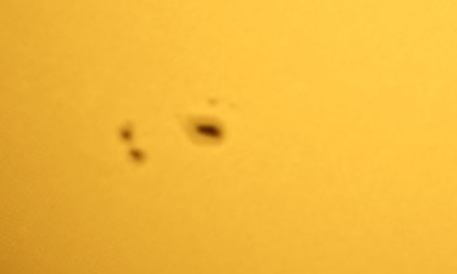
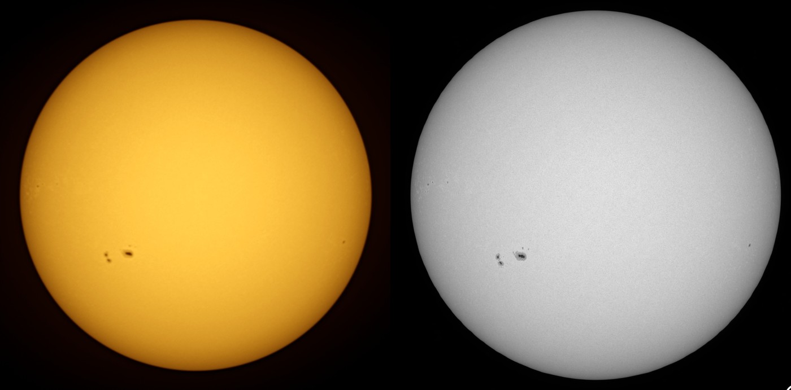

Day log · Tuesday 13 October 2026
Sunspots, after losing the Sun
The plan
No clear nights were forecast for the rest of the week, but Tuesday afternoon looked promising, so we tried something new: the Sun. The Seestar S30 Pro comes with a clip-on solar filter that blocks all but about one part in a hundred thousand of the light, which makes the Sun safe to photograph. Without it, a telescope pointed at the Sun would destroy its camera in moments, and anyone looking through one would be blinded.
The back garden's view south is blocked by the house, so the scope went out the front on its plain tripod, without the wedge. The morning was overcast with rain, which cleared just before midday as the forecast said it would.
- Captured
- 12:05–15:20
- Bursts
- 11 × 40 frames
- Exposure
- 12 ms · gain 0
- Filter
- Seestar solar filter
- Mount
- Tripod, alt-az
Finding the Sun
The scope said it was pointing at the Sun. The camera saw nothing. Claude stepped the scope around while watching the wide-angle camera, and found a bright glow that turned out to be a reflection inside the camera, not the Sun. So I went out and looked: the Sun was about 90° to the left of where the telescope was pointing.
Without the wedge the telescope works out its direction from a built-in compass, and that compass was badly wrong, probably confused by cars or other metal nearby. Once Claude knew which way to look, the wide-angle camera picked up the Sun straight away. It centred the Sun, told the scope where it was really pointing, and from then on every re-aim landed on the Sun. Before any of this, Claude had checked that the filter was really on: a frame through the main camera at the shortest exposure was almost black, as it should be. The scope repeated that check every time it re-aimed.
The first frame had a small dark mark on the disc. I asked whether that was dust on the lens. It wasn't: as the scope moved, the mark stayed in the same place on the Sun, so it was on the Sun itself. It was a sunspot.
The result
The scope took a burst of 40 short frames every ten minutes. The air is never perfectly still, so most frames are slightly blurred, and only the sharpest were kept. The steadiest air was between 12:50 and 13:50, with the Sun about 30° up. Later in the afternoon, as the Sun dropped lower, its light had to pass through more warm, churning air, and the frames got softer, so we stopped at 15:20. The final picture is the sharpest 80 frames from that best hour, stacked together.

The main group, lower left, is the eye-catcher. The biggest spot has a dark core with a paler fringe around it. Sunspots are dark only by comparison: they are about 1,500 °C cooler than the surface around them, because strong magnetic fields there hold back the heat rising from inside. On its own a sunspot would glow brighter than a full Moon.

The scale is hard to take in. The biggest spot, fringe included, is about three times the width of Earth, and the whole group stretches about nine Earths from end to end.
There's more around the edge. Near the left-hand edge are a few tiny spots and some faint bright patches: these are new active regions rotating into view, since the Sun turns once every 27 days or so. Near the right-hand edge is a single small spot that will rotate out of sight within a day or two. The whole disc also darkens towards its edge, because there we see higher, cooler layers of the Sun.
Checking against NASA
NASA's Solar Dynamics Observatory watches the Sun from orbit around the clock. Here is its picture from the same morning next to ours:

Every spot is where it should be: the main group, its smaller companions, the specks at the left edge and the lone spot on the right. A 30 mm lens on a tripod won't match a space telescope for detail, but it gets the same answer.
What next
The interesting thing about the Sun is that it changes. The spots drift across the disc as the Sun turns, and they grow, split and fade over days. The plan is to photograph it on every clear day and turn the pictures into an animation of the Sun rotating. Next time I'll recalibrate the compass in the app first.